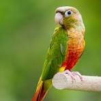

The Small Conure is a friendly, intelligent, and playful pet bird. It enjoys interacting with people, learning simple tricks, and eating fresh fruits, vegetables, and quality pellets. With proper care and attention, a conure can become a loving companion for many years.